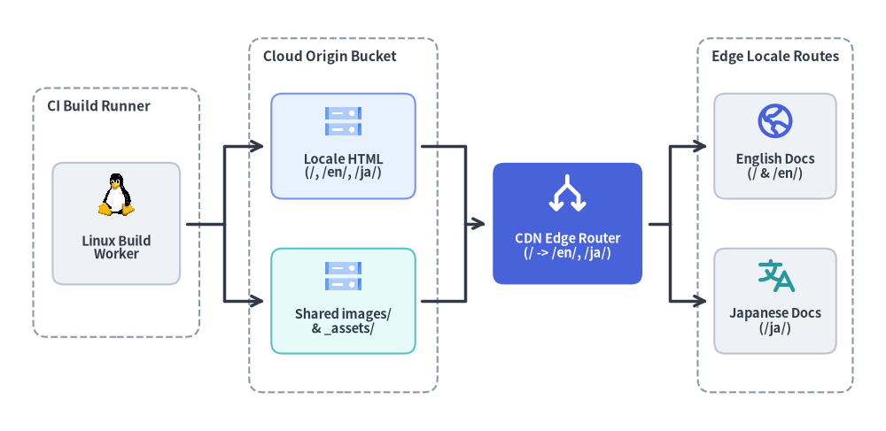
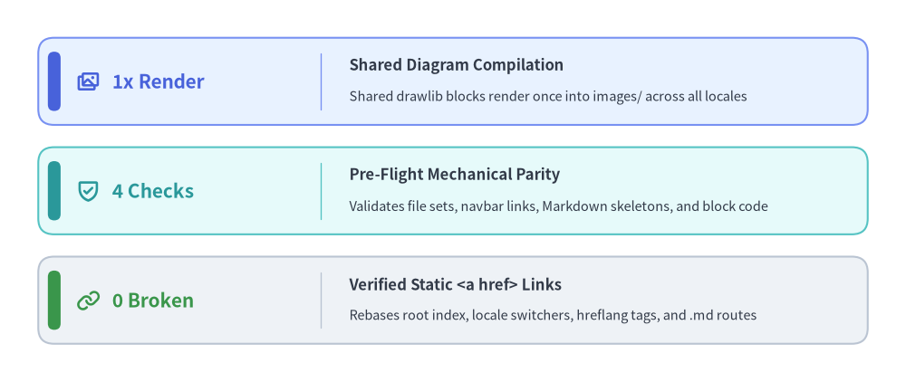

システムアーキテクチャ
Drawlibは多言語ドキュメント構成（i18n.toml）から、1回描画の共有図版とJavaScript不要のエッジルーティングを備えた統合静的アセットツリーを生成します。全体像は概要を、翻訳・運用手順はローカライズ・ワークフローを参照してください。

Source Code
from drawlib.canvas import save, setup
from drawlib.diagrams.architecture import ArchitectureDiagram, GcpIcon, Node, NodeGroup, PhosphorIcon
from drawlib.images import image
from drawlib.styles import Style, Styles
setup(width=160, height=78)
def linux_worker_icon(xy: tuple[float, float], width: float, *, style: Style) -> None:
image(xy, width=width * 0.80, image="_assets/linux.png")
d = ArchitectureDiagram(
node_style=Styles.PrimaryBold,
node_text_style=Styles.DarkBold.patch(text_size=10.5),
edge_style=Styles.DarkBold,
edge_text_style=Styles.DarkBold.patch(text_size=10.5),
node_card_style=Styles.Neutral.patch(shape_r=2.0),
)
group_title_style = Styles.DarkBold.patch(text_size=11.0, halign="left", valign="top")
ci_group = d.add(
NodeGroup(
title="CI Build Runner",
width=30.0,
height=45.0,
padding=3.0,
style=Styles.MutedDashed.patch(shape_r=2.5),
text_style=group_title_style,
),
xy=(6.0, 17.0),
)
worker = ci_group.add(
Node(
"Linux Build\nWorker",
width=23.0,
height=22.0,
icon=linux_worker_icon,
icon_size=8.2,
card_style=Styles.Neutral.patch(shape_r=2.0),
),
xy=(15.0, 20.5),
)
origin_group = d.add(
NodeGroup(
title="Cloud Origin Bucket",
width=34.0,
height=64.0,
padding=3.0,
style=Styles.MutedDashed.patch(shape_r=2.5),
text_style=group_title_style,
),
xy=(45.0, 7.0),
)
origin_html = origin_group.add(
Node(
"Locale HTML\n(/, /en/, /ja/)",
width=26.0,
height=19.0,
icon=GcpIcon.CLOUD_STORAGE,
icon_size=7.2,
card_style=Styles.PrimaryNeutral.patch(shape_r=2.0),
),
xy=(17.0, 44.5),
)
origin_assets = origin_group.add(
Node(
"Shared images/\n& _assets/",
width=26.0,
height=19.0,
icon=GcpIcon.CLOUD_STORAGE,
icon_size=7.2,
card_style=Styles.SecondaryNeutral.patch(shape_r=2.0),
),
xy=(17.0, 16.5),
)
edge_router = d.add(
Node(
"CDN Edge Router\n(/ -> /en/, /ja/)",
width=27.0,
height=22.0,
icon=PhosphorIcon.ARROWS_SPLIT,
icon_size=7.8,
style=Styles.WhiteBold,
text_style=Styles.WhiteBold.patch(text_size=10.5),
card_style=Styles.PrimaryFlat.patch(shape_r=2.0),
),
xy=(102.5, 37.5),
)
routes_group = d.add(
NodeGroup(
title="Edge Locale Routes",
width=28.0,
height=64.0,
padding=3.0,
style=Styles.MutedDashed.patch(shape_r=2.5),
text_style=group_title_style,
),
xy=(126.0, 7.0),
)
route_en = routes_group.add(
Node(
"English Docs\n(/ & /en/)",
width=22.0,
height=19.0,
icon=PhosphorIcon.GLOBE_HEMISPHERE_WEST,
icon_size=7.2,
card_style=Styles.Neutral.patch(shape_r=2.0),
),
xy=(14.0, 44.5),
)
route_ja = routes_group.add(
Node(
"Japanese Docs\n(/ja/)",
width=22.0,
height=19.0,
icon=PhosphorIcon.TRANSLATE,
icon_size=7.2,
style=Styles.SecondaryBold,
card_style=Styles.Neutral.patch(shape_r=2.0),
),
xy=(14.0, 16.5),
)
build_fork = d.junction(xy=(40.5, 37.5))
d.connect(worker, build_fork, arrow="-", padding=(1.2, 0.0))
d.connect(build_fork, origin_html, arrow="->", padding=(0.0, 1.2)).via((40.5, 51.5))
d.connect(build_fork, origin_assets, arrow="->", padding=(0.0, 1.2)).via((40.5, 23.5))
origin_merge = d.junction(xy=(84.0, 37.5))
d.connect(origin_html, origin_merge, arrow="-", padding=(1.2, 0.0)).via((84.0, 51.5))
d.connect(origin_assets, origin_merge, arrow="-", padding=(1.2, 0.0)).via((84.0, 23.5))
d.connect(origin_merge, edge_router, arrow="->", padding=(0.0, 1.2))
edge_fork = d.junction(xy=(121.0, 37.5))
d.connect(edge_router, edge_fork, arrow="-", padding=(1.2, 0.0))
d.connect(edge_fork, route_en, arrow="->", padding=(0.0, 1.2)).via((121.0, 51.5))
d.connect(edge_fork, route_ja, arrow="->", padding=(0.0, 1.2)).via((121.0, 23.5))
d.draw(xy=(0.0, 0.0))
save()
ビルドパイプラインと構造パリティ保証
多言語ビルドはヘッドレスなLinuxワーカー上で実行され、HTMLおよびMarkdownを生成する前に全ロケール間の構造的整合性（パリティ）を自動検証します。
| アーキテクチャ層 | 役割と責務 | 主な成果物・機構 |
|---|---|---|
| Linux Build Worker | 事前パリティ検査の実行とPython描画ブロックのヘッドレス変換 | i18n.toml, styles.py, utils.py, _assets/linux.png |
| Locale HTML Origin | ルートトップページと各言語専用HTMLツリーの出力 | index.html, en/**/*.html, ja/**/*.html |
| Shared Asset Bucket | 言語間で共通の図版を単一パスへ集約・重複排除 | images/<page>/<file>.png, _assets/* |
| CDN Edge Router | hreflangメタデータ付き静的HTMLと共有PNGの高速エッジ配信 |
/（既定言語en）, /en/, /ja/ |

Source Code
from drawlib.canvas import save, setup
from drawlib.icons import phosphor
from drawlib.smartarts import KpiCards
from drawlib.styles import Styles
setup(width=142, height=60)
kpi = KpiCards(
style=Styles.PrimaryNeutral,
metric_style=Styles.PrimaryBold.patch(text_size=15.0),
text_style=Styles.DarkBold.patch(text_size=12.0),
description_style=Styles.Dark.patch(text_size=10.5),
accent_style=Styles.PrimaryFlat,
icon_style=Styles.PrimaryBold,
accent_position="left_pill",
metric_layout="left_column",
metric_width_ratio=0.34,
spacing=3.5,
)
kpi.add(
"1x Render",
"Shared Diagram Compilation",
"Shared drawlib blocks render once into images/ across all locales",
icon=phosphor.images,
)
kpi.add(
"4 Checks",
"Pre-Flight Mechanical Parity",
"Validates file sets, navbar links, Markdown skeletons, and block code",
style=Styles.SecondaryNeutral,
metric_style=Styles.SecondaryBold.patch(text_size=15.0),
accent_style=Styles.SecondaryFlat,
icon=phosphor.shield_check,
icon_style=Styles.SecondaryBold,
)
kpi.add(
"0 Broken",
"Verified Static <a href> Links",
"Rebases root index, locale switchers, hreflang tags, and .md routes",
style=Styles.Neutral,
metric_style=Styles.SuccessBold.patch(text_size=15.0),
accent_style=Styles.SuccessFlat,
icon=phosphor.link,
icon_style=Styles.SuccessBold,
)
kpi.draw(xy=(6.0, 6.0), width=130.0, height=48.0, columns=1, align="bottom_left")
save()
エッジルーティングと共有アセットの重複排除
翻訳対象の本文とロケール非依存のシステム図版を分離することで、対応言語が増えてもビルド時間とストレージ効率を高水準に保ちます。
- ルートエントリの自動リベース（
index.html）: 既定言語（default_lang）のトップページ（en/index.md）はルート直下のindex.htmlへ直接出力され、en/...やimages/...、_assets/...への相対リンクが自動的に補正されます。 - 共有図版の単一生成（
images/）:en/architecture/index.mdとja/architecture/index.mdが同一コードのdrawlibブロック（cloud_topology.pngおよびbuild_kpi_metrics.png）を共有するため、各PNGの描画は1回のみで完了し、全言語間でCDNキャッシュを共有できます。 - 静的HTMLによる言語スイッチャー: 各HTMLページにはクライアントサイドJavaScriptに依存しない静的
<a href>言語切替リンクと<link rel="alternate" hreflang="...">タグが埋め込まれます。具体的な翻訳・検証フローはローカライズ・ワークフローを、サイト全体の構成は概要を参照してください。